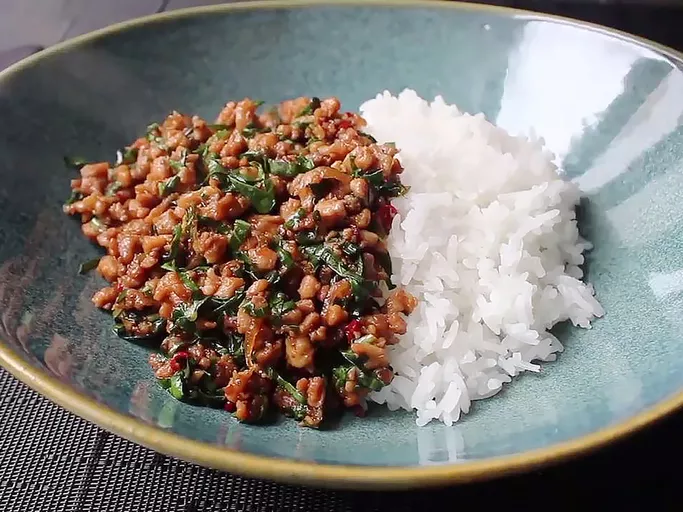

Odin's Own Pancakes
Home

Description
This is Odin's version of this classic Thai dish, which has spectacular taste even with regular basil instead of Thai or holy basil. The sauce actually acts like a glaze as the chicken mixture cooks over high heat. The recipe works best if you chop or grind your own chicken and have all ingredients prepped before you start cooking.
Ingredients
- 1/2 cup chicken broth
- 1 tbsp oyster sauce
- 1 tbspsoy sauce
- 2 tbsp fish sauce
- 1 tsp white sugar
- 1 tsp brown sugar
- 2 tbsp vegetable oil
- 1 lb skinless, boneless chicken thighs - coarsely chopped
- 1/4 cup sliced shallots
- 4 cloves minced garlic
- 2 tbsp minced thai chilies, serrano, or other hot pepper
- 1 cup thinly sliced basil leaves
- 2 cups hot cooked rice
Steps
- Whisk chicken broth, oyster sauce, soy sauce, fish sauce, white sugar, and brown sugar together in a bowl until well blended.
- Heat large skillet over high heat. Drizzle in oil. Add chicken and stir fry until it loses its raw color, 2 to 3 minutes.
- Stir in shallots, garlic, and sliced chilies. Continue cooking on high heat until some of the juices start to caramelize in the bottom of the pan, about 2 or 3 more minutes.
- Add about a tablespoon of the sauce mixture to the skillet; cook and stir until sauce begins to caramelize, about 1 minute.
- Pour in the rest of the sauce. Cook and stir until sauce has deglazed the bottom of the pan. Continue to cook until sauce glazes onto the meat, 1 or 2 more minutes. Remove from heat.
- Stir in basil. Cook and stir until basil is wilted, about 20 seconds. Serve with rice.
Enjoy!